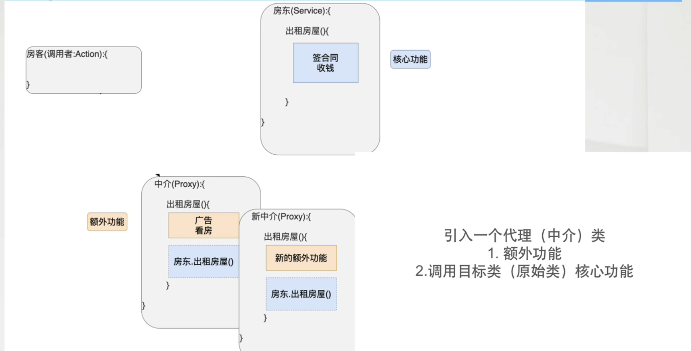

静态代理设计模式
1. 栗子
1. 日常生活的栗子：
房东现在有房子需要出租(签合同，收钱)于是房东到处张贴广告引人看房，
一开始房东可能觉得每天这么张贴广告引人看房也还行，可时间久了房东不想继续这样子每天起早贪黑了，于是就不再继续张贴广告引人看房了。
但是这个时候租客就不满意了，广告都没有了没人带我看房了，我怎么找房子？
对于上述问题矛盾就来了，租客找不到房子，房东也不想继续张贴广告
那么这个时候中介(代理设计模式)就诞生了，看房张贴广告交由中介进行处理，
而房东只需进行合同与钱款的收入，那对于房客来说还是跟之前一样可以看到广告找房子，也有人带看房子。如下图

2. 概念
1. 概念：通过代理类，为原始类(目标类)增加额外的功能
2. 好处：利于(目标类)拓展与维护
3. 名词说明
- 什么是目标类or原始类？
例如上述案例目标类则是房东，对于开发角度目标类则是业务类(核心功能)
- 什么是目标方法or原始方法
上述的案例目标方法则是房东对外租房的方法，对与业务类来说目标方法则是业务方法
- 额外功能(附加功能)
日志，事物，性能
3. 代理开发的核心要素
代理类 = 目标类(原始类) + 额外功能 + 目标类(原始类)实现相同的接口
4. 静态代理编码
// 目标类(原始类)
public interface OrderService {
void showOrder();
}
// 代理类
public class OrderServiceProxy implements OrderService {
private OrderServiceImpl orderServiceImpl = new OrderServiceImpl();
@Override
public void showOrder() {
System.out.println("OrderServiceProxy.showOrder -> log");
orderServiceImpl.showOrder();
}
}
5. 静态代理总结
1. 有多少目标类就要有多少代理类，开销大，后续维护管理困难